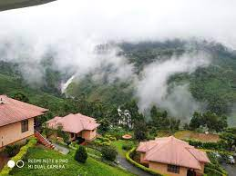
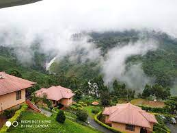

The best time to visit Idukki is during the Winter season (November-February). It can be visited throughout the year as well owing to its pleasant weather and scenic beauty. The township of Idukki has a variable climate when one travels from the western to the eastern side of the district.
Munnar, the famed hill station of south India, is a romantic locale where natural beauty is everywhere to visit, explore and to enjoy. Munnar is situated at the confluence of three mountain streams – Muthirapuzha, Nallathanni and Kundala – and the word 'Munnar' means three rivers in Malayalam.
 
